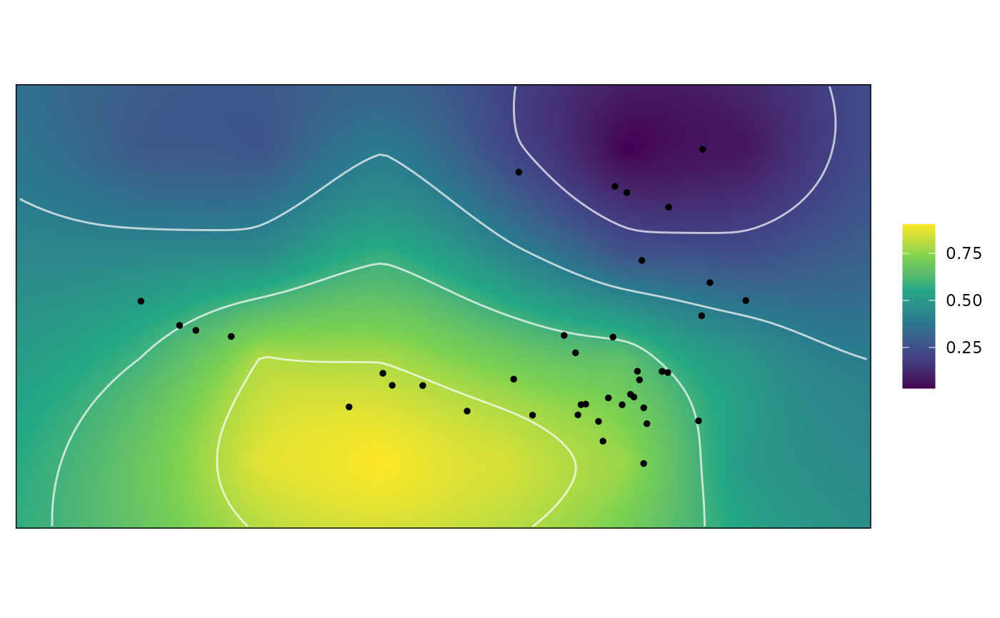

Compute optimally weighted adaptive landscapes
calcGrpWprime.RdcalcGrpWprime() computes the optimally weighted adaptive landscape by searching through the adaptive landscapes formed from sets of weights and performance surfaces, and finding the set of weights that yields the greatest overall (average) fitness value (Z) across a sample of data or a subset thereof.
Arguments
- x
for
calcGrpWprime(), anall_lscpsobject; the output of a call tocalc_all_lscps.for
print(), agrp_Wprimeobject; the output of a call tocalcGrpWprime()- index
an optional vector of indices indicating which subset of the
new_datadataset originally supplied tokrige_surfshould be calculated. Can be specified as a vector of numerical indicies, logical indices, or row names. If unspecified, the optimal weights will be computed using the full sample. Supplied tosubset, so the name of the dataset containing the subsetting variable does not need to be included if the subsetting variable is innew_data. See Examples.- method
the method used to compute the optimal weights. Allowable options include
"chi-square"(the default),"quantile", or"max"."chi-square"and"quantile"involve averaging across the best several sets of weights, whereas"max"uses the singular best set of weights. Abbreviations allowed. See Details.- quantile
when
methodis"chi-square"or"quantile", the top quantile used to determine the best sets of weights to be included in the average to compute the optimal set of weights. Should be a number between 0 and 1, with a low value indicating that only the few top sets of weights will be used. Ignored whenmethod = "max".- digits
the number of significant digits to print.
- ...
passed to
print.default.
Details
calcGrpWprime() calculates an overall fitness score for each set of weights based on the average weighted fitness values of the indexed subgroup. The set of weights that optimizes this score is then produced as the weights defining the optimal adaptive landscape for that subgroup. The way the final set of weights is computed depends on the argument to method. When method = "max", the single best set of weights is used. However, often many of the upper sets of weights perform equally or nearly equally as well as the best set. It is instead recommended to use "quantile" or "chi-squared" methods. When method = "quantile", the top \(X\%\) of weights are averaged to compute the optimal weights, where \(X\) corresponds to the value supplied to quantile. When method = "chi-square", the chi-squared value \(\chi^2_i\) is computed for each set of weights \(i\) as $$\chi^2_i = -2 \log \frac{Z_{max}}{Z_i}$$
where \(Z_{max}\) is the largest \(Z\) among the weights, and a p-value is computed for each \(\chi^2_i\) value using a \(\chi^2\) distribution with 2 d.f.; any set of weights with a p-value less than quantile is included to be averaged to compute the optimal set of weights.
Value
A grp_Wprime object, which contains the following components:
- Zprime
a list containing the optimal weights and the Z value they yield (
wn), and, ifmethodis"chi-square"or"quantile", summary statistics about the best sets of weights used to compute the optimal weights, including the standard error (wn.se), standard deviation (wn.sd), and range (wn.range).- W
a matrix containing all sets of weights (i.e., those supplied to the
grid_weightsargument ofcalc_all_lscps()) along with the Z value each yields, ordered in descending order by the yielded Z value. Whenindexis specified, the resulting Z values are computed only using the indexed subset.- Wprime
a
wtd_lscpobject containing the optimal weights (W) and the landscape grid and sample functional characteristcs weighted by the optimal weights.
References
Dickson, B. V., Clack, J. A., Smithson, T. R., & Pierce, S. E. (2021). Functional adaptive landscapes predict terrestrial capacity at the origin of limbs. Nature, 589(7841), 242-245.
Jones, K. E., Dickson, B. V., Angielczyk, K. D., & Pierce, S. E. (2021). Adaptive landscapes challenge the "lateral-to-sagittal"" paradigm for mammalian vertebral evolution. Current Biology, 31(9), 1883-1892.
See also
calc_all_lscps for computing the landscapes which are to be optimized.
calcWprimeBy for finding optimal sets of weights for multiple subgroups defined by a subgrouping variable.
plot.grp_Wprime for plotting the resulting adaptive landscape.
Examples
data("warps")
data("turtles")
warps_fnc <- as_fnc_df(warps,
func.names = c("hydro", "fea"))
kr_surf <- krige_surf(warps_fnc, new_data = turtles)
#> [using ordinary kriging]
#> [using ordinary kriging]
#> [using ordinary kriging]
#> [using ordinary kriging]
grid_weights <- generate_weights(n = 3, data = kr_surf)
#> 4 rows generated
all_lscps <- calc_all_lscps(kr_surf,
grid_weights = grid_weights)
wprime_S <- calcGrpWprime(all_lscps,
index = Ecology == "S")
wprime_S
#> Optimal weights:
#> Weight SE SD Min. Max.
#> hydro 1 NA NA 1 1
#> fea 0 NA NA 0 0
#>
#> Average fitness value at optimal weights:
#> Value SE SD Min. Max.
#> Z 0.7835 NA NA 0.7835 0.7835
#>
#> - method: chi-squared, quantile = 0.05
plot(wprime_S)
